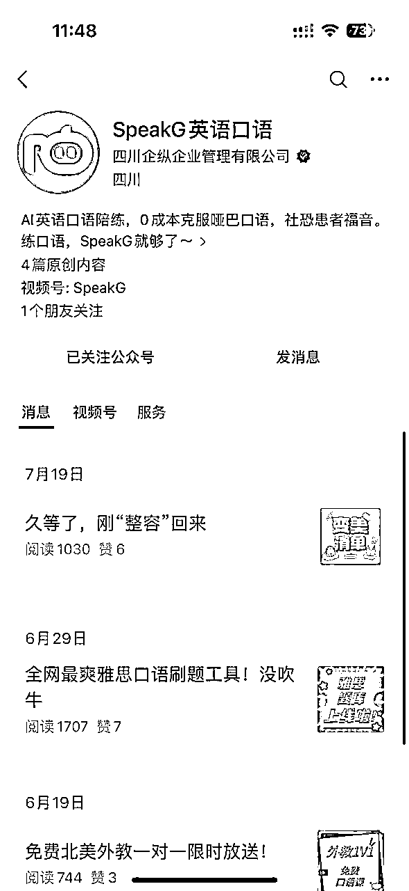

来源：https://aboqbe7f4x.feishu.cn/docx/LECJdCGXjoSRM4xJ0socERjmnMb
我是墨色，一个互联网大厂的前产品经理兼业余程序员
其实我是99年生的，四舍五入00后 （笑
今年2月份AI浪潮国内再次爆发，我也是在那时开始探索AI赛道，和朋友组建了一个兼职技术小团队，做产品探索。
期间GPT、AI绘画、AI语音等都有所涉猎，5月份裸辞all in AIGC创业
这半年既有云端的PPT式创业经历，见各类投资人，参加国内各类AI比赛，比如即刻的AI hack，奇绩创坛创业营。也接了一些企业定制的AI解决方案（外包），最后反而靠抖音引流卖课变现赚到钱了
可以说，我是AIGC赛道的亲身经历者，经历市场从狂热到低谷，从喧嚣到寂静
我是一个创业小白，依然还在泥潭里继续努力，继续学习
这次想分享我这半年AI创业的观察与反思
兼职算起的半年创业经历曲折多变，大致分为3个阶段，这次主要分享第一阶段，都是一些失败的经历（无奈
2022年末ChatGPT海外爆火，但可能由于疫情原因，国内并没有什么水花，直到今年2月ChatGPT再次霸榜头条，一时间全民都在了解AIGC，“第四次技术革命”“AI终将替代人”，“黑客帝国发生在现实”各种言论甚嚣尘上
我自己本身在公司负责部分AI相关的产品功能，一直在关注和了解
当时也非常震撼和激动，震撼于小说突然照进现实，激动于错过PC互联网、错过移动互联网、错过房地产升值等一系列机遇，我们年轻人终于赶上一个大时代机遇！
所以本着“打工是不可能打工的”的心态，我和几个伙伴立马组队用业余时间一起探索AI，希望通过打磨一些ai产品，借着信息差与市场蓝海，进入“用户、利润、技术更迭”的发展飞轮
“小步迭代、快速试错”
我们先后打磨了4个产品，AI口语老师、AI学习工具、AI塔罗师和AI换模特
开始
我们基于以下分析逻辑，决定切入这个赛道|练手
过程
当时基于上面的分析，我们花了2周开发一款demo（目前已停运），大致功能如下
结果
0个用户，内测一周除了拉几个周围朋友体验下，我们没有新增1个陌生用户
直接胎死腹中
反思
失败直接原因是团队缺乏运营和商业化同学
我们团队只有产品和技术，缺乏负责拉用户的线上运营, 缺乏商务推广，甚至投流都不会
试着自己上手去公域引流，发现流量聊胜于无。
我们为什么不去拉一个懂用户增长的伙伴呢？
一直在找，却没找到合适的……大厂的员工岗位已经螺丝钉化，周围认识的运营同事都没干过公域拉用户的事情，往往借着平台顺风做事
（tips：这样伙伴到现在也非常缺！！！ 擅长的朋友可以联系我交流合作！！
我们认识到“找人”的重要性，但却痴迷于另一个看起来更重要的这个事情
——“选赛道”
我们开始反思：AI+口语老师是不是个好赛道？
答案显然不是，在“双减”和飘忽不定的新政策下，ai+教育对投资人来说简直是双重地雷，根本没法融到任何钱
其次AI老师也没有什么技术壁垒，核心都是调用GPT，很难形成竞争壁垒，到后面开始卷市场
……
分析一通后以及咨询各路投资人和创业前辈后，伙伴觉得“ai+口语老师”赛道不值得做，要换赛道。大家本来年薪就比较高，几个人加起来已经上百万了，要做就做一年能赚几千万的赛道
所以还没推广“ai+口语老师”就放弃了
现在复盘，当时是用一个问题掩盖了另一个问题。
小团队又何必纠结这个赛道那个赛道，先捡着六便士再探头看月亮。我们当时应该把这个事情做好，甚至更有利于我们去找新的方向。

起始
4月份我们参加了即刻举办的上海AI Hack比赛
由于我们是国内最早做AI应用的团队之一，靠着AI口语老师demo+加上不错的团队背景得以入围参加
300支队伍报名筛选进100个，大家基于主题“Copilot of X”进行两天一夜的封闭开发, 最后即刻选出几支队伍，种子轮投资200万占股7%。
我们选的题目是“Copilot for Study”
选择原因：
过程
我们花了（1/3）讨论意淫了很多AI+知识的场景
……
我们也知道我们有些问题没想清楚，
“产品为谁服务，他们真实学习痛点是什么，人们真的需要一款这样的学习工具吗……”
我们几个产品经理坐在办公室里意淫了产品的演进，却并没有去找真实用户聊聊
但由于时间问题，我们没法换题目也没法接着讨论了，只能硬着头皮往下做
我们还剩一天一夜的时间开发demo
几个人在会议室里拼尽全力，争分夺秒，通宵到凌晨才赶出一个demo
（非常简陋，我这里就不放截图了
结果
我们理所当然落选了,
但整个比赛旅程依然非常有趣和有价值！我们收获了很多，
感兴趣AI hack比赛内容的，可以看这个报道：https://mp.weixin.qq.com/s/sWP2tmYeGwe1LK5vHHIPAg
反思
“选题失控”、“讨论失控”、“开发进度失控” 比赛过程中，我们其实犯了很多错，而且我在当时意识到了，却并没有出来阻止干预，或者说当时我应该更强势些，我对过程很满意，但还是很遗憾结果的残缺。
第一、第二个项目的失败和半途而废，依然给伙伴们带来了很多不满和挫败，
我主要侧重产品和技术，负责自己或找人把ai产品做出来，但经验背景很浅。创始人AA背景光鲜，适合拉融资路演和产品规划，看起来很合适搭档。但其实双方所处的环境、目的，做事节奏都有很大区别
这也导致了为什么我们很多项目没有推出去，或者经常半途而废。
开始
经历过上面几个项目，团队开始感到疲惫了，事事没结果没反馈
当时我也快和合伙人AA闹掰了，他负责市场和拉人，但是市场一点进展没有，却一直想换赛道和项目解决问题，我非常不理解且有怨气。
最终我们确定了最后试一个赛道，不行就和平散伙
——
思来想去，我们最后选择了“AI塔罗”
原因：
过程
我们花了2-3天开发一个AI塔罗师demo
产品demo流程如下：
其实自测效果还不错hhh，能打60分，“预言自证”加上塔罗牌的特定话术还是有不错的体验
结果
通过玄学交流群我们终于有用户开始使用了
获得了史诗级进步，有几十个用户了！
但依然没什么价值和意义，负责宣推的AA并没有持续去做这件事情
他对AI创业的激情也在褪去
最后大家和平散伙了
AA选择继续留在公司打工，受够大厂螺丝钉工作的我五月离职去外面看看AI的新机会
……
反思
这个阶段的失败没有人有对错，只是大家所在的位置不同，诉求不同，能力不同，不太匹配罢了
或者说“创业本来就是九死一生的事情”
我依然非常感激和荣幸能有过这段创业经历，我们能搭伙已经是当时的局部最优解，过程非常充实和有意义的
每个人都有自己的局部最优解，能和志同道合伙伴一起走一段时间已经是幸事
在互联网公司工作的人很容易“养尊处优”，大家拿着高薪酬干着“体面”的事情，很多时候没干过也干不了dirty work
比如我们自己去互联网流量平台发小广告获客怎么也能获取到一些用户
为什么不呢
没做好脱下长衫，干各类活的准备而已
开始
由于技术局限性和政策风险，我五月份出来后转向做AI绘画的产品研发
当时调研后看好2个赛道：AI换模特和AI摄影
（后来这两个赛道果然都爆出圈了，前者有美图设计室、weshop，后者出了妙鸭相机
考虑到我自己并没有C端推广能力和资源，我选择了面向B端市场的AI换模特
过程
学习竞品，我们开发了一个AI商业拍摄产品demo
能够保留衣服细节的情况下快速更换模特和背景，比如假人换人，亚洲人换欧洲人
别看美图，蘑菇街那些吹嘘的几百万上千万投入，其实并不复杂，我们背后的技术原理和模型都是一样的 （笑
体验地址：https://shop.uedraw.art/#/home
结果
我们试着在广州找十几家服装公司推广产品，收效甚微
我们找的企业都表示不需要这些产品
素材一般来自源头工厂，而源头工厂一般把拍摄外包出去，每个月几千上万的降本，对于几千万流水的工厂来说不如选择继续更稳妥的外包服务。到了电商企业环节，很多中小企业并不需要额外的拍摄，直接使用工厂素材就行。
……
这并不是说市场没有AI换模特的需求，只是我们没法快速找到有需求的企业，毕竟我们是外行人
我们知道每到一个行业都要找到深耕行业的老师请教合作，只是很多道理，知易行难
大约花了2周，我们既找不到要用的人、也找不到合作的衣服领域老板，却意外找到了想尝试AI电商创业的老板
他本来就做了多年衣服领域的直播带货，也能链接到产业上下游，有对应客户群体。
我决定把代码打包几万块卖了出去，看看他们是怎么推广市场的。
此外几万块也算是给团队成员一个结果，有点进步。
（苦笑）
反思
在大厂每天就负责桌面分析、写文档、跟项目，除此之外的事情很少接触。但是创业后发现确实有太多能力需要补足、太多新事情需要去体验。早期如何获客引流、如何在互联网发小广告、该怎么做商务洽谈等等
……
“路漫漫其修远兮”
今天AI应用层项目融资异常艰难
国内政策监管趋严，大家关注到最新消息也能看到：APP Store一夜下架GPT相关产品，未经备案的APP不得联网等等，也能感受到
AI绘画还好，大模型相关的应用层由于“容易乱说话”基本上很难过审
目前市面上出的绝大部分大模型产品，聊天机器人，AI老师等等，基本上都涉及“用户信息出境”，“AI应用未备案” “大模型未备案”等问题，一举报一个准，全看地方zf是否罚款增收。
所以大模型其实能做出不少有趣的应用，但国内基本上没有什么风声，有风声的都被举报下架了
AI创业依然是“渠道为王”，起码在我看来，做产品不难，最后比拼的就是谁能更好找到用户，更快变现，实现商业闭环。AI拉平了大厂和小团队的技术差距，也让更多人可以卷入AI赛道，蓝海很快就会变成红海，就像AI头像工具、国内GPT、AI客服等等赛道，一个妙鸭相机火了，一晚上能多出几百块同类产品，还有几千款在研发。
AI应用层机会适合原本就在某个细分市场积累好用户和资源的人，他们有行业输入、有用户、懂市场，能事半功倍得推进。
有几个大家可能比较熟知又卷又热闹的赛道，很多集中在电商领域，离钱近体量大，整个交易都在线上方便AI切入
……
我了解到很多AI团队想走SaaS服务，最后还是靠企业定制几万-几十万外包单存活
真正赚钱的一些AI应用都在水下不吱声
比如我经常接触到的“洗稿洗版权”
很多企业都有洗稿洗版权的需求，GPT可以快速改别人的优质文案，避免抄袭，AI绘画可以快速重绘，洗掉图片和视频的版权，每年能节省一大笔版权成本。
之后文章会展开分享这个话题
我很早就在摸索GPT相关，Prompt工程、向量数据库、Langchain，模型微调等等都上手实操过，也用模块化思维实现“永久智能体”，玩过autoGPT。五月份就彻底转向AI绘画
我的真实体感是——GPT更像是个助手，一个补充工具甚至玩具。
GPT应用价值主要分为3块
在文本生成改写确实替代了很多编辑的岗位，价值毋庸置疑。
但在文本之外，现有AI技术能力只能作为原本岗位的补充
比如热门的GPT客服，企业希望用GPT来替代人工客户，但发现效果较差，无论是接入知识库还是微调，在很多场景并没法替代人，只能作为真人不在或者忙不过来时的一种补充。
当然，最关键的问题还是政策监管问题，机器人说错一句话被举报了，企业就等着罚款吧……很考验企业的政务关系，小团队还是比较危险的。
相反，AI绘不仅实际得在设计领域降本增效，风险也小很多。SD和MJ已经开始用于大厂原画插画设计、游戏素材设计、漫画，摄影等等
视觉类的内容生成在短视频时代也能生产优质图文内容，获取公域流量变现
我的第二个阶段就是靠AI绘画生产内容赚钱的
对于我而言，是值得
我给自己预设了半年时间去自由体验
没有负债、不需要为谁负责、与其体面得拧螺丝不如做点有意思有想象的事情
“混乱是最好的上升阶梯”
我这半年是真实体验到了AI带来的市场机会
AI技术拉平了大厂和团队的技术差距，拉平了专家和普通人的信息认知，生产效率提升扰乱了传统市场格局，新技术产生让大家都在一个水平线上
我能和平时根本接触不到的商业大佬交流、能体验不同行业的经验输入，几乎每周生活工作都有较大的变化
就像一个骰子，新技术革命才给了我短时内多次投掷的机会，让我去触碰更多机会
可能我收入比在大厂打工低了很多，但生活更加有意思，痛并快乐着。
欢迎大家添加我微信和我交流~
我能带给你什么：
希望交流的人：